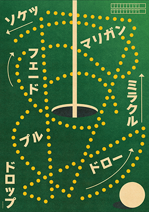

GOLF
Une approche minimaliste inspirée des affiches sportives japonaises et du design constructiviste. Ici, le golf devient un langage graphique, où chaque trajectoire raconte une histoire : précision, erreur, hasard, seconde chance. Comme un plan stratégique abstrait, cette composition transforme le mouvement en symbole.